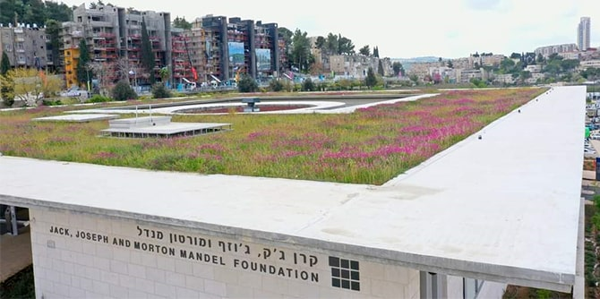
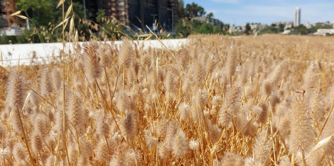
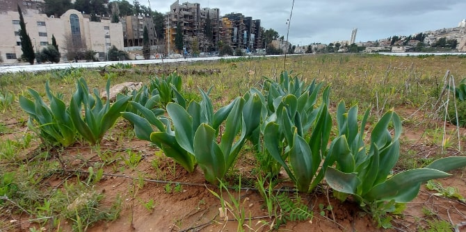
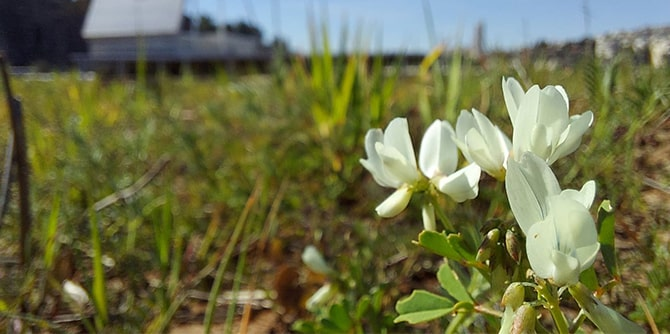
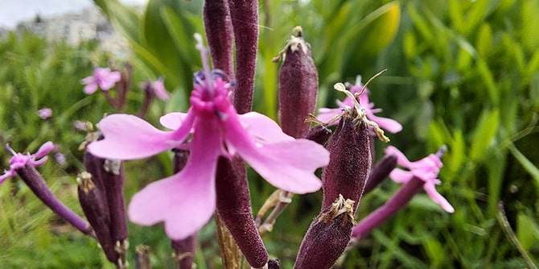
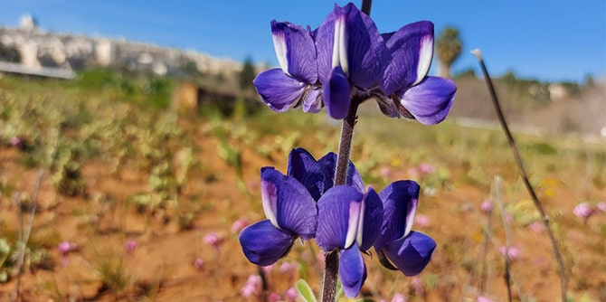

(צילום: שלומי אמסלם)
בית קרן מנדל החדש בירושלים הוא מבנה אלגנטי בן שתי קומות המשתלב עם סביבתו, בין היתר בזכות "הגג החי" התורם למגוון הביולוגי העירוני ומשמש בית לאלפי פרחים ולמגוון של בעלי חיים וצמחיית בר. הגג החי תוכנן על-ידי אדריכל הנוף ליאור לוינגר, בשיתוף עם צוות אדריכלי הבניין ובעזרת היועץ עמיר בלבן, מנהל תחום הטבע העירוני בחברה להגנת הטבע בישראל. הגג מאפשר לבניין לשמור על רצף הירוק והחורש של הוואדי ולשמר את הקישוריות שלו כמסדרון אקולוגי עירוני הכולל גם את הגן הבוטני ואת פארק הצבאים.
שלא כמו גגות חיים רבים, לגג של בית קרן מנדל אין מערכת השקיה אוטומטית. הגג נועד לחקות את הטבע ולפרוח בהתאם לעונות השנה ולמשקעים הטבעיים, ומכיוון שהוא ירוק רק חלק מהשנה, הוא נחשב "גג חום" ולא "גג ירוק". שטחו של הגג שני דונמים וחצי – הגג החי הגדול ביותר בישראל והגדול מסוגו במזרח התיכון. בחורף, לאחר שהאדמה סופגת את מי הגשמים, הגג פורח בעוצמה ומתכסה בצמחים ים תיכוניים יפהפיים, הממשיכים לפרוח לאורך כל האביב. במהלך הקיץ, כאשר אין גשם ואין השקיה, הצמחים נובלים והגג נצבע בזהוב ובחום, כמו האזורים הטבעיים הסובבים אותו.

הגג החי בקיץ (צילום: עמיר בלבן)
במהלך בניית הבניין כוסה הגג באיטום מיוחד כדי למנוע דליפת מים לתוך הבניין. לאחר מכן הונחה שכבת הנשיאה של הקרקע, ומעליה אדמת טרה רוסה בעומק 20-10 ס"מ. באדמה ניטעו יותר מ-60 סוגי צמחים, בהם 2,000 חצבים, 700 כלניות, 500 נוריות, 600 פקעות של שום גבוה, 200 רקפות ועוד. 40 סוגי צמחים נוספים, כמו החיטה הצומחת על הגג בקיץ, צמחו מזרעים שהיו באדמה, ועשרות צמחים נוספים הביאו עמן הציפורים.

חצב מצוי (צילום: עמיר בלבן)
הגג הוא בית לא רק לאלפי פרחים אלא למגוון של בעלי חיים. הוא מאוכלס באלפי חסרי חוליות, חרקים מאביקים, דבורים ופרפרים. מינים רבים של ציפורים נמשכים לגג ולשפע המזון שהתפתח עליו, ומסתובבים בו בחופשיות וללא הפרעה. אפילו בקיץ, כאשר ישראל יבשה לחלוטין, גג הבניין שוקק חיים.

(צילום: עמיר בלבן)
יש לציין כי עלות הקמת הגג החי אינה גבוהה יחסית, התשתית הדרושה מינימלית ועלויות התחזוקה אפסיות. כמו כן, הוא משמש כשכבת בידוד החוסכת אנרגיה ומורידה את עלויות המיזוג בקיץ. הגג אף עוזר לספוג מי נגר – הוא מסוגל לנהל נגר בנפח של עד 130 מ"ק, דבר המדגים את הפוטנציאל של גגות חיים להיות חלק ממערכת ניהול המים בעיר ולסייע במניעת הצפות באזורים עירוניים. במקום לזרום לרחובות, הצמחים משתמשים במים, סופגים פחמן דו-חמצני ומייצרים חמצן.

(צילום: עמיר בלבן)
החברה להגנת הטבע בישראל עוקבת אחר המתרחש על הגג החי בבית קרן מנדל ומשתמשת בו כדוגמה לעידוד בניית גגות חיים על מבנים עירוניים וציבוריים בישראל. קרן מנדל גאה להיות חלוצה בסוג זה של שמירה על איכות הסביבה בישראל, לשמש דוגמה לאופן שבו בניינים יכולים לפצות על אובדן הטבע בסביבות עירוניות, ולהיות חלק מן המאמצים הלאומיים והבינלאומיים לתרום לשימור המגוון הביולוגי.
 (צילום: עמיר בלבן)
{kind=link}
{kind=link}
{kind=link}
{kind=link}
{kind=link}
{kind=link}